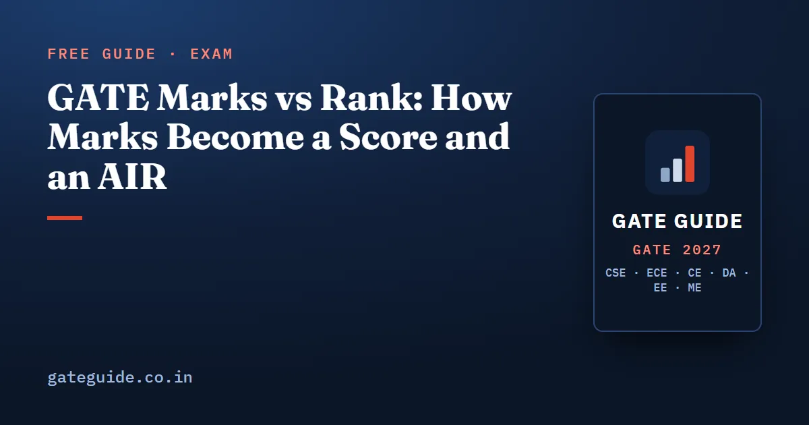

GATE Marks vs Rank: How Marks Become a Score and an AIR

People search "GATE marks vs rank" hoping for a table that turns 55 marks into a rank. No such official table exists, and the reason is the lesson. Your rank depends on who else wrote your paper that year, and your score depends on how they did. This guide shows how marks become a GATE score and an All India Rank, step by step, so you can read any marks-vs-score claim yourself.
In this guide
Key takeaways
- Every GATE paper has 65 questions and 100 marks. Marks are what you earn; for a multi-session paper they are normalised.
- The GATE score, out of 1000, comes from your marks by a fixed formula with two reference points set after the exam.
- Your All India Rank is your position among everyone who wrote your paper that year.
- Within one paper and year, more marks always means a higher score and a better rank.
- Across papers and years, the same marks can mean a very different rank. Paper size and difficulty decide it.
- The organisers publish no marks-vs-rank table. Treat any table you find as one year's history.
Three numbers, defined once
Your result carries three numbers. Each one is built from the one before.
- Marks are your total out of 100 after negative marking. For a paper held in more than one session, the brochure converts raw marks into normalised marks first.
- The GATE score places those marks on a scale out of 1000.
- The All India Rank (AIR) is your position in the merit list of your paper.
The marking rules behind the first number are the same in every paper. They are explained in the GATE exam pattern and marking scheme (written for CSE, but the marking scheme is common to all papers).
Step 1: from raw marks to normalised marks
Some papers run in several sessions, each with its own question set. One set may turn out harder than another. The brochure therefore rescales each session's marks so that every session sits on a common footing, before any score is computed.
The full formula, with every symbol defined, is in GATE score calculation and normalisation. For this guide you need only its effect. A raw mark from a harder session becomes a slightly higher normalised mark, and one from an easier session a slightly lower one.
The official GATE 2026 rank-1 list shows this in practice. The CS and CE rank-1 marks carry an asterisk, which that page uses for normalised marks. Single-session papers show plain raw marks.
Step 2: from marks to a score out of 1000
The score formula is a straight line through two fixed points. The General qualifying mark is mapped to a score of 350. The average marks of the top performers are mapped to 900. Every other mark falls on the line between and beyond them:
Here is your marks, is the General qualifying mark of the paper, and is the mean marks of the top 0.1 percent or the top 10 candidates, whichever group is larger. and .
The "top 10" rule matters for small papers. In GATE 2026, 211,020 candidates appeared in CS, so its top 0.1 percent was about 211 people. Naval Architecture had 419 appear, where 0.1 percent is less than one person, so the top 10 is used instead.
A worked example (invented numbers)
Take one candidate with 55 marks in two different years.
In year A, suppose and :
In year B the paper is harder. Suppose and :
The same 55 marks score about 46 more in the harder year. That is the score doing its job: it measures where you stood, not just what you wrote.
Remember: Marks tell you what you earned. The score tells you where you stood in that paper that year. Institutes and recruiters mostly read the score.
Step 3: from marks to an All India Rank
A rank is simpler than a score. Everyone in your paper is listed by marks, and your rank is one more than the number of candidates above you. Within one paper the score rises with the marks, so a list sorted by marks and one sorted by score are the same list.
Equal marks share a rank. The official GATE 2026 list shows two Civil Engineering candidates both at rank 1, with the same normalised marks and the same score of 1000.
Why the same marks give different ranks
A rank counts people, so it depends on how many wrote the paper. Here are official GATE 2026 figures, published by IIT Guwahati.
| Paper (2026) | Candidates appeared | A rank of 2,000 is roughly the top |
|---|---|---|
| CS | 211,020 | 0.95 percent |
| EC | 95,752 | 2.1 percent |
| CE | 76,385 | 2.6 percent |
| EE | 65,801 | 3.0 percent |
| ME | 59,612 | 3.4 percent |
Now an invented illustration of marks. Suppose, in two papers, 2 percent of candidates score above 50. In a paper of 200,000 candidates, marks of exactly 50 sits at rank about . In a paper of 60,000 the same position is rank about . Same marks, same standing, very different rank.
Trap: Comparing your AIR with a friend's in another paper tells you almost nothing. Compare scores, or compare your share of the list, never raw rank numbers.
What the top of the list looked like in 2026
The rank-1 marks also vary by paper. These are from the official GATE 2026 list of rank-1 candidates.
| Paper (2026) | Rank-1 marks | Rank-1 score |
|---|---|---|
| ME | 96.67 | 1000 |
| EC | 95.67 | 1000 |
| CE | 94.54 (normalised) | 1000 |
| CS | 92.57 (normalised) | 1000 |
| EE | 92 | 1000 |
| DA | 90 | 1000 |
| Petroleum Engineering | 69 | 948 |
Two lessons sit in this table. Rank 1 does not need full marks; it needs the highest marks in that paper. And the top score is not always 1000. The Petroleum Engineering rank-1 candidates had 69 marks and a score of 948. These are 2026 figures only, not a forecast for 2027.
Why no one can give you a marks-vs-rank table in advance
Every number in steps 2 and 3 is fixed only after the exam: the qualifying mark, the top-performer average and the count of candidates above you. So a table made before the result is a guess built from an older year's constants.
Tables built from past results are history. Use one only if it names its year, its paper and its source, and remember the next year will differ. The official FAQ even warns that a score can be negative while marks are positive, which no simple table would show.
In one line: Marks are yours, the score is your marks against that year's field, and the rank is a head count of who beat you.
What you can control is the marks column. General Aptitude alone is 15 of the 100 marks in every paper; GATE General Aptitude preparation shows how to bank them. The rest comes from timed practice. Each of the six GATE 2027 books has 10 full mock tests in the 65-question, 100-mark pattern. With 6 to 21 February 2027 set for the exam, as listed in GATE 2027 exam dates, those mocks are where your marks are built.
Quick revision
- Every paper has 65 questions and 100 marks; marks are normalised for multi-session papers.
- Score formula: the General qualifying mark maps to 350, the top-performer average to 900.
- The top group is the top 0.1 percent or the top 10, whichever is larger.
- AIR is one more than the number of candidates above you in your paper; equal marks share a rank.
- Within one paper and year, marks, score and rank always move together.
- Across papers and years, the same marks can give very different scores and ranks.
- There is no official marks-vs-rank table; any table is one year's history, not a prediction.
GATE Guide is an independent site and is not affiliated with IIT Madras, IISc or GATE. Confirm current rules on the official website.
Frequently asked questions
What is the difference between GATE marks and GATE score?
Marks are out of 100, and for a paper held in several sessions they are normalised marks. The score is out of 1000 and comes from a formula in the official brochure. It maps the General qualifying mark to 350 and the average of the top performers to 900, so the same marks can give different scores in different years.
How is GATE rank calculated?
Your All India Rank is your position among everyone who wrote the same paper in the same year. Within one paper the score rises with the marks, so ordering by marks and by score gives the same list. Candidates with equal marks share a rank, as the tied rank-1 candidates in the official GATE 2026 list show.
Is there an official GATE marks vs rank table?
No such table appears in the GATE 2027 brochure or on the recent organiser sites. They publish qualifying marks, candidate counts and the rank-1 candidates of each paper. Any marks-vs-rank table you find online is someone's compilation of reported results. Treat it as history for its year and paper, never as a prediction.
Why do the same marks give a different rank in different papers?
Because a rank counts the people above you, and that depends on how many wrote the paper and how difficult it was. In GATE 2026, CS had 211,020 candidates appear while ME had 59,612, according to IIT Guwahati. A rank of 2,000 meant roughly the top 1 percent in CS but about the top 3.4 percent in ME.
Can two candidates with the same marks get different GATE scores?
Within one paper and one year, no. The same marks feed the same formula and give the same score. Across years or papers, yes, because the qualifying mark and the top-performer average change every time. That is why a score compares candidates better across years than raw marks do.
Sources
- GATE 2027 official website (IIT Madras)
- GATE 2027 Information Brochure (official PDF)
- GATE 2027 FAQs (official)
- GATE 2026 cut-off marks and candidate counts (IIT Guwahati, official)
- GATE 2026 All India Rank 1 candidates (IIT Guwahati, official)
Dates, fees and the syllabus are set by the GATE 2027 organising institute and can change. Always confirm at gate2027.iitm.ac.in.